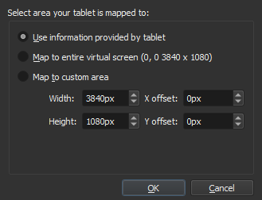

Tablet Settings¶

- Tablet
Input Pressure Global Curve : This is the global curve setting that your tablet will use in Krita. The settings here will make your tablet feel soft or hard globally.
- Use Mouse Events for Right and Middle clicks.
Some tablet devices don't tell us whether the side buttons on a stylus. If you have such a device, you can try activate this workaround. Krita will try to read right and middle-button clicks as if they were coming from a mouse instead of a tablet. It may or may not work on your device (depends on the tablet driver implementation). After changing this option Krita should be restarted.
4.2 版新加入.
- For Krita 3.3 or later:Tablet Input API
On Windows 8 or above only.
- WinTab
Use the WinTab API to receive tablet pen input. This is the API being used before Krita 3.3. This option is recommended for most Wacom tablets.
- Windows 8+ Pointer Input
Use the Pointer Input messages to receive tablet pen input. This option depends on Windows Ink support from the tablet driver. This is a relatively new addition so it's still considered to be experimental, but it should work well enough for painting. You should try this if you are using an N-Trig device (e.g. recent Microsoft Surface devices) or if your tablet does not work well with WinTab.
Advanced Tablet Settings for WinTab¶
When using multiple monitors or using a tablet that is also a screen, Krita will get conflicting information about how big your screen is, and sometimes if it has to choose itself, there will be a tablet offset. This window allows you to select the appropriate screen resolution.
- Use Information Provided by Tablet
Use the information as given by the tablet.
- Map to entire virtual screen
Use the information as given by Windows.
- Map to Custom Area
Type in the numbers manually. Use this when you have tried the other options. You might even need to do trial and error if that is the case, but at the least you can configure it.
If you have a dual monitor setup and only the top half of the screen is reachable, you might have to enter the total width of both screens plus the double height of your monitor in this field.
4.2 版新加入: To access this dialog in Krita versions older than 4.2, you had to do the following:
Put your stylus away from the tablet.
Start Krita without using a stylus, that is using a mouse or a keyboard.
Press the Shift key and hold it.
Touch a tablet with your stylus so Krita would recognize it.
If adjusting this doesn't work, and if you have a Wacom tablet, an offset in the canvas can be caused by a faulty Wacom preference file which is not removed or replaced by reinstalling the drivers.
To fix it, use the “Wacom Tablet Preference File Utility” to clear all the preferences. This should allow Krita to detect the correct settings automatically.
警告
Clearing all wacom preferences will reset your tablet's configuration, thus you will need to recalibrate/reconfigure it.
Tablet Tester¶
4.1 版新加入.
This is a special feature for debugging tablet input. When you click on it, it will open a window with two sections. The left section is the Drawing Area and the right is the Text Output.
If you draw over the Drawing Area, you will see a line appear. If your tablet is working it should be both a red and blue line.
The red line represents mouse events. Mouse events are the most basic events that Krita can pick up. However, mouse events have crude coordinates and have no pressure sensitivity.
The blue line represents the tablet events. The tablet events only show up when Krita can access your tablet. These have more precise coordinates and access to sensors like pressure sensitivity.
重要
If you have no blue line when drawing on the lefthand drawing area, Krita cannot access your tablet. Check out the page on drawing tablets for suggestions on what is causing this.
When you draw a line, the output on the right will show all sorts of text output. This text output can be attached to a help request or a bug report to figure out what is going on.